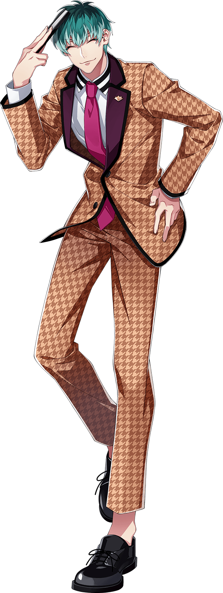
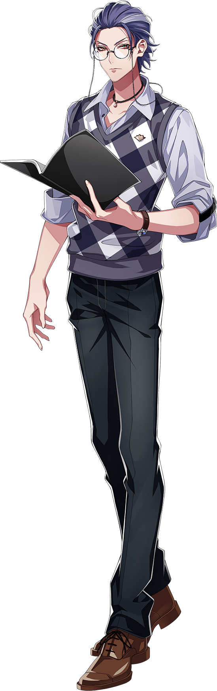
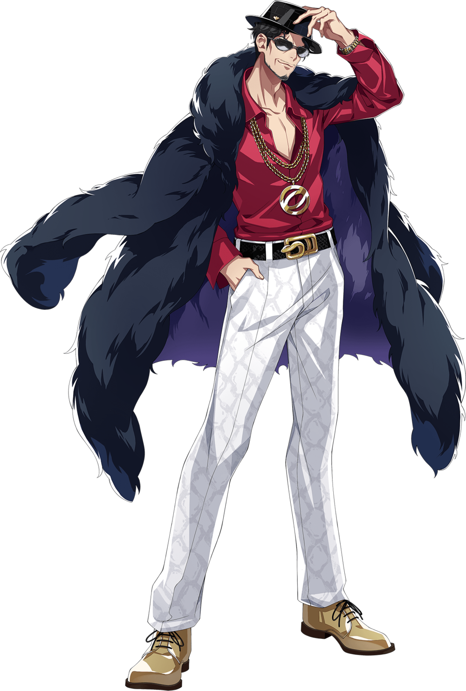

Dotsuitare Honpo (どついたれ本舗) is the Osaka Division representative rap group.
The team consists of conman Rei Amayado, teacher Rosho Tsutsujimori, and their leader, comedian Sasara
Nurude.
Sasara Nurude

Sasara Nurude, a.k.a. Tragic Comedy, is a manzai comedian, former member of Mad Comic Dialogue and the
leader of Dotsuitare Honpo.
A stand up comedian. Though on stage he's a genius at making people laugh, in private, for some reason he
repeats tacky gags. He and Rosho
were in a manzai duo together as Dotsuitare Honpo, but they disbanded and he now works as a solo artist. The
name Dotsuitare Honpo
was later inherited to become their new team name.
A long time ago, he teamed up with Yokohama Division's Samatoki as Mad Comic
Dialogue.
“ Only I can change my life. No one can do it for me. ”
Solo
Rosho Tsutsujimori

Rosho Tsutsujimori, a.k.a. WISDOM, is a teacher and the second member of Dotsuitare Honpo.
A math teacher at the Osaka's Gyoshin Private High School. As a teacher, he's beloved by his
students.
He used to be in a comedy duo with Sasara Nurude. known as "Dotsuitare Honpo", but because of a traumatic
event, to this day,
he developed a crippling stage fright and became unable to speak well in front of large crowds. Normally, he
speaks standard Japanese,
but in front of his friends and Sasara, or at times when he is really angry, he lets his guard down and
speaks in Kansai dialect.
“ Anyone who has never made a mistake has never tried anything new. ”
Solo
Rei Amayado

Rei Amayado, a.k.a. MC MasterMind, is a conman, the creator of Hypnosis Mics, father of the Yamada Brothers and the third member of Dotsuitare Honpo.
A self-proclaimed conman. He is the person responsible for developing Hypnosis Microphone and bringing it to
Chuohku. Formerly affiliated with the
military technical development department. Involved with Chuohku and other divisions, while operating behind
the scenes, although this speculation
is engulfed in mystery.
As charming as he is, he'll stop at nothing to carry out his plans. Although he always keeps an
arrogant-like behavior and does not show his real
intentions, at the same time, he is a man of his word with a strong sense of duty.
“ A life is not important except in the impact it has on other lives. ”
Solo